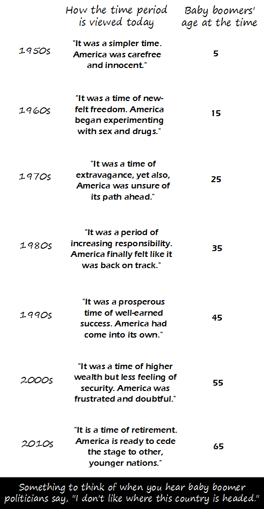

Comic JK 882
When I Feel Like It
⇤
<
?
>
⇥

⇤
<
?
>
⇥
Forum
.
RSS
.
Digg
.
Facebook
.
Reddit
.
Twitter
.
Stumbleupon
Enter your thoughts on number 882 here. Please, no spamming, trolling, or being a baby boomer. >I like feeding huge amounts of nitroglycerin to babies and then shaking them. Does that count? >> [You're] my new hero, as long as I don't get on a plane with you. >>>ftfy (you're == you are; your == that which belongs to you) Citation Required (I'm talking about your quotes) So the country is following the lifetime of majority births. Maybe we're not so bad at democracy. >When you put it in this perspective....it makes a lot more sense. Selection bias, selection bias everywhere... >maybe it's just you seeing selection bias in the things you choose to read... ? >>No, I'm completely impervious to any and all kinds of bias. Frankly, I couldn't care less about what Americans think about different periods. >Maybe you should stop reading the comic. >>Why? It's funny! >>American misconceptions become other peoples' wars ---> USA goes to war for oil, nor because of misconceptions >>>Other peoples' misconceptions have become America's wars too. I think we're even. >>>>stupid humans...your misconceptions of your place in the universe will be your undoing! all hail Zorg! >>>>>What Hamlet said with irony, I now say with conviction: What a piece of work is a man! How noble in reason! How infinite in faculty! In form, in moving, how express and admirable! In action how like an angel! In apprehension how like a god! >>>>>>In quotations, how like Captain Picard. It's all Uranus's fault for boinking Zorg. > If you MUST edit this, please at least keep it remotely relevant to the comic at hand. >>Secondary relevance - see comments above. And can I just say Thank Science that Santorum did not win last night. > :) >But we need a theocracy, how else are we supposed to justify the lack of civil liberties? >>Eugenics >>>there is nothing wrong with Eugenics at it's core, it's the tricky part of putting it into practice that gets people worked up... most often those that are all for it until they realize it means they themselves have got to go > I'd rather see Santorum versus Obama than Romney versus Obama. >>Depends how much of an Obama supporter you are. And whether national values mean anything to you. >>And take a chance that Santorum wins? >>>How is Eugenics a justification for lack of civil liberties? >>>How is Eugenics a justification for Santorum? >>>>Santorum may be used as an argument for Eugenics though. To the "father" guy: welcome to the editor's club! >>What exactly makes you think I, I mean he, has not been in this club for years? >>>My apologies for the presumption. Perhaps you, er, he, have just been dormant recently, as the only noticeable editing has been between anus and mother. >>>>I posted a response here but someone deleted it so now you are all deprived of my knowledge. >>>>> :( >>>>>Who needs knowledge. Ignorance is bliss! Santorum 2012! Okay who the hell keeps copypasting the first few sentences from this comment box here and deleting them a few seconds later? I've seen it three times already. > I doubt it's one person - more likely a collision between two posters. >>"a collision between two posters" That sounds dangerous. 65: it is a time of looking at your retirement funding and saying only 15 more years of work to go! >Unless you've allocated to treasuries the last 5 years [You